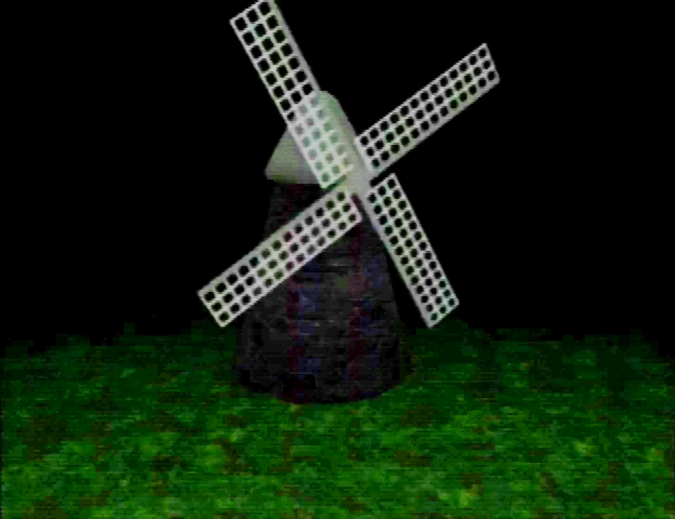

Windmill
{kind=link}

{kind=link}
Windmill image (brightened)
The windmill is a location found in the Newmaker Plane. It is adjacent to a camera that occasionally fluctuates in height and color. It is only fully visible through the camera as viewed through the tool room, or if the player is a shadow monster man (in which then the windmill can be entered). Otherwise, it is only visible as a translucent, hovering foundation.
It is also depicted in a picture frame in a corridor under the Newmaker Plane, though the image is reversed from its in-game orientation.
Appearances
In Petscop 2, one of the images in the hallway under the Newmaker Plane is of the windmill. When Paul first visits the tool room and doesn't find much from asking the red tool any questions, he moves to look out at the windmill on the screen behind the red tool for a moment. Seeing nothing notable, he begins to walk away, until the red tool tells him to "keep watching the windmill". Following this command, Paul moves to watch the windmill again only to hear two booming noises and nothing else, and so he leaves for the time being.
At the start of Petscop 6, the same view of the windmill from the screen in the tool room is shown with the same sounds playing; Paul has left his game idle and recording the footage to see if anything happens from continuing to watch the windmill, as the red tool had said. The video then shows a “2 hrs 39 mins later” message, from which the windmill appears again-- however, momentarily, Marvin enters the scene from the right.
Marvin walks behind the windmill, and a short while later, the windmill's clockwise blade rotation changes rotating counterclockwise. The camera is turned around for Marvin to give a message to Paul. Marvin then turns it back around towards the windmill and leaves. A while later, the windmill suddenly disappears, leaving the floating platform normally seen in the player's presence.
In Petscop 9, after finding out how to become a shadow monster man himself, Paul returns to the windmill on the Newmaker Plane, which is now visible and accessible to him, including being able to enter inside the windmill. Inside it are two large, rotating gears, a white tool, a flickering and trembling figure atop a pile of pieces, and a sign depicting a face to be entered into the the Child Library. The figure, spinning in place at the same rate and direction as the bigger of the two gears, has the same face shown on the nearby sign.
Paul interacts with the white tool, which causes it to lift up toward the figure in two short, choppy frames as the screen fades to black for a moment. The piece counter then ticks up by 50 values during this black screen, and the room momentarily fades back in with the figure and pieces missing. The noise from before now begins to sound again, and the gears are now spinning in reverse, causing the windmill itself to begin spinning clockwise again.
In a recording shown in Petscop 23, on the third floor of the school, an image of the windmill interior can be seen on a Tarnacop machine's monitor.
")
")
{kind=link}
{kind=link}
")
{kind=link}
Child Library
A miniature model of the windmill appears as a decorative object on the table of Lina's room in the Child Library. Paul looks at the windmill object, but it is not interactive.
")
Master bedroom
Another miniature windmill appears in the master bedroom, shown in a recording at the beginning of Petscop 14. It has the functionality of a dialog box, and the presented text is a message intended for Marvin.
The player in the recording (presumed to be Marvin) interacts with the windmill object, and it displays the following text:
This windmill vanished off the face of the earth.
Here's a similar puzzle. For you, Marvin:
There are two pictures of a door.
In the first picture, the door is closed.
In the second picture, taken later, the door is open.
Nobody opened the door.
The door did not open itself.
The door, in fact, did not open at all.
What happened?
The windmill only shows in this specific iteration of the master bedroom shown in said recording; it does not appear in other versions of the master bedroom.
")
Disappearance


{kind=link}
According to Rainer's messages in Petscop 9, Marvin, Anna, and Lina Leskowitz went to the windmill in 1977 and took pictures. Anna took a photo of Marvin and Lina standing in front of the windmill, however, Lina and the windmill "both disappeared into thin air." When Anna took another picture a few minutes later, only Marvin was remaining.
Theories
A miniature windmill being in Lina's Child Library room could be meant to reference a connection between Lina and the windmill's disappearance.
Gallery
| Gift Plane | Gift Plane · Even Care · Odd Care · Work Zone |
|---|---|
| Newmaker Plane | Newmaker Plane · Office · Grave room · Tool room · Quitter's Room · Child Library · Windmill · Party room · House · School |